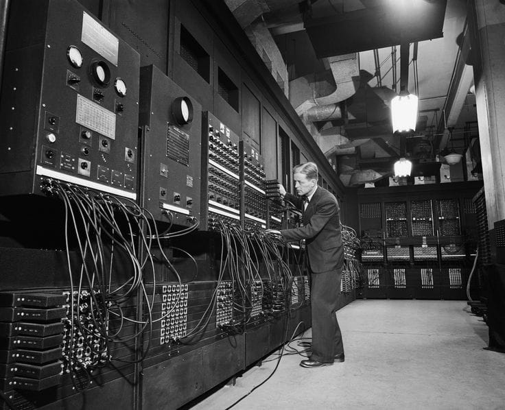
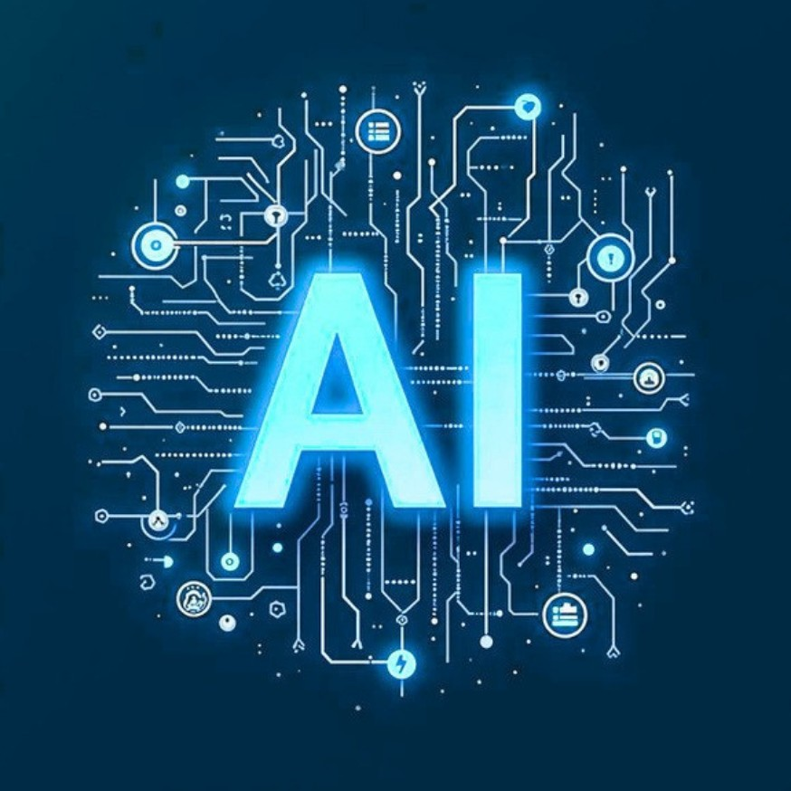
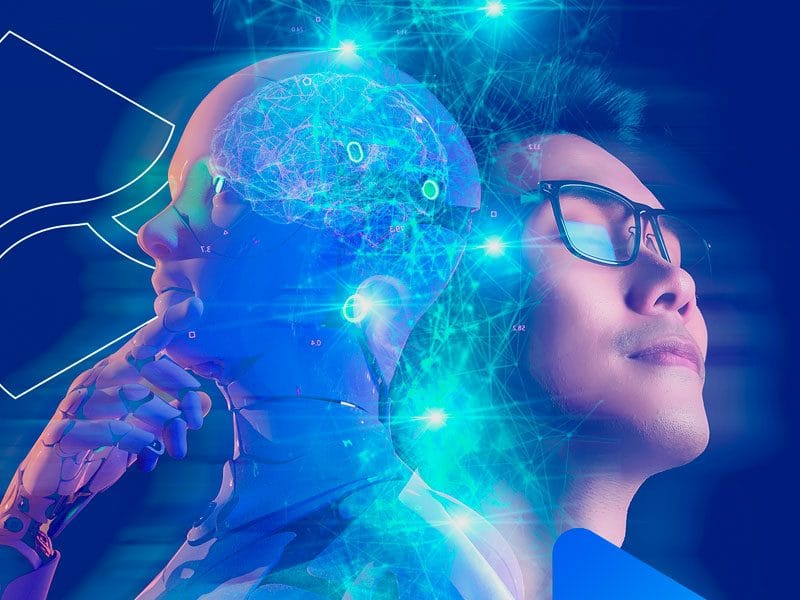

Futuro com a
IA
Especialização. Compromisso. Valor.
Invenções ➔
1.A roda (cerca de
3.500 a.c)

A roda é considerada uma das primeiras grandes invenções da
humanidade. Surgiu na Mesopotâmia e inicialmente foi usada em
carroças e instrumentos de trabalho. Com ela, o transporte de pessoas e
mercadorias ficou muito mais fácil, permitindo o crescimento do
comércio e das cidades. Sem a roda, o desenvolvimento das civilizações
teria sido muito mais lento.
Impacto principal: facilitou o transporte, a agricultura e o comércio.
2. A prensa de
Gutemberg (século
XV)

Inventada por Johannes Gutenberg por volta de 1450, a prensa de tipos
móveis revolucionou a comunicação. Antes dela, os livros eram copiados
à mão, o que os tornava raros e caros. A nova tecnologia permitiu
imprimir milhares de cópias rapidamente, espalhando ideias,
conhecimentos científicos e obras literárias. Isso contribuiu para o
Renascimento, a Reforma Protestante e o avanço da educação.
Impacto principal: democratizou o acesso ao conhecimento.
3. A máquina a
vapor(século XVIII)

A máquina a vapor foi aperfeiçoada por James Watt e se tornou o
símbolo da Revolução Industrial. Ela transformou fábricas, minas, naviose trens, aumentando
enormemente a produção de bens. Com essa
invenção, o trabalho manual começou a ser substituído por máquinas,
mudando a economia e a vida das pessoas em todo o mundo.
Impacto principal: impulsionou a industrialização e o crescimento
econômico.
4. A eletricidade e
a lâmpada elétrica

O domínio da eletricidade foi uma das maiores conquistas científicas da
humanidade. A lâmpada elétrica, popularizada por Thomas Edison, permitiu
iluminar casas, ruas e fábricas de forma segura e eficiente. A partir da eletricidade
surgiram motores, eletrodomésticos, computadores, celulares e praticamente toda
a tecnologia moderna.
Impacto principal: transformou a vida cotidiana e possibilitou o avanço
tecnológico.
5.Computador
(1945)

A história do computador começou há muito tempo, mas o
primeiro computador eletrônico de grande porte
amplamente reconhecido foi o ENIAC.
Ano de criação: 1945 (foi concluído em 1945 e apresentadoao público em 1946).
Criadores: John W. Mauchly e J. Presper Eckert.
Para que servia originalmente: Foi desenvolvido para realizarcálculos matemáticos muito complexos,
principalmente paracalcular tabelas de trajetória de projéteis para o Exército dosEstados Unidos
durante a Segunda Guerra Mundial.
Com o passar dos anos, os computadores evoluíram e hoje
são usados para diversas atividades, como estudar,
trabalhar, acessar a internet, criar programas, jogar,
comunicar-se e armazenar informações.
6. A internet
(século XX)

Criada inicialmente para conectar computadores em projetos militares e científicos, a internet se expandiu para o mundo inteiro. Ela permite comunicação instantânea, acesso a informações, ensino a distância, compras online e trabalho remoto. Hoje, bilhões de pessoas utilizam a internet diariamente, tornando-a uma das invenções mais influentes da história. Impacto principal: conectou o mundo e acelerou a circulação de informações.
7. IA

Sobre a Inteligência Artificial (IA):
Ano de criação: 1956, quando o termo Inteligência Artificial foi apresentado
durante a Conferência de Dartmouth.
Principal responsável pelo termo: John McCarthy.
Para que servia originalmente: A IA foi criada para desenvolver sistemas capazes desimular a
inteligência humana, realizando tarefas como resolver problemas,
aprender, tomar decisões e compreender linguagem.
Hoje, a IA é utilizada em assistentes virtuais, tradutores, carros autônomos,
reconhecimento de voz e imagem, recomendações de filmes e músicas,
diagnósticos médicos, educação e diversas outras áreas.
Inteligência artificial (IA)
A Inteligência Artificial
(IA) está transformando a
maneira como as pessoas
estudam, trabalham e
organizam suas vidas.
Além de impulsionar
grandes avanços
tecnológicos, ela
também vem sendo
utilizada para combater a
procrastinação digital,
um problema causado
pelo excesso de tempo
gasto em redes sociais,
jogos e outras distrações
online.
Entre as principais invenções
e tecnologias que
revolucionaram a história com
o uso da IA estão os
assistentes virtuais
inteligentes, como o ChatGPT,
que ajudam na aprendizagem,
na resolução de dúvidas e na
produção de conteúdos.
Também se destacam os
aplicativos de produtividade
com IA, que criam
cronogramas personalizados,
enviam lembretes e
identificam os momentos de
maior rendimento do usuário.
Outra inovação importante
são os bloqueadores
inteligentes de distrações.
Esses sistemas utilizam IA
para reconhecer padrões de
procrastinação e limitar
temporariamente o acesso a
aplicativos e sites que
prejudicam a concentração,
incentivando hábitos mais
saudáveis.
Além disso, plataformas de
ensino com IA adaptam o
conteúdo ao ritmo de
aprendizagem de cada
estudante, tornando os
estudos mais eficientes e
reduzindo o desânimo que
muitas vezes leva à
procrastinação.
Conclusão
A Inteligência Artificial
representa uma das maiores
revoluções tecnológicas da
atualidade. Quando utilizada
de forma consciente, ela pode
aumentar a produtividade,
melhorar o aprendizado e
ajudar as pessoas a
desenvolverem disciplina no
uso da tecnologia,
transformando a
procrastinação digital em uma
oportunidade de crescimento
pessoal e profissional.
Nosso curso
Cada uma dessas invenções marcou uma etapa
importante da evolução humana. A roda facilitou o
movimento, a prensa espalhou o conhecimento, a
máquina a vapor aumentou a produção, a eletricidade
trouxe energia para o mundo moderno e a internet
conectou bilhões de pessoas. A Inteligência Artificial
surge como o próximo passo dessa trajetória, capaz
de auxiliar em estudos, saúde, comunicação, trabalho
e criação de novas tecnologias. O grande desafio do
presente é aprender a usar a IA de forma ética,
responsável e consciente, para que ela contribua
positivamente para o futuro da humanidade.

Clique aqui para participar ➔Sobre nós
Desde o início, temos oferecido um serviço confiável aos nossos clientes.
Tivemos a honra de ser a empresa escolhida pelas seguintes corporações: